Raster data - the basics#
This tutorial focuses on working with basic Raster data management and analysis using plans.
Notebook setup#
For users running this tutorial as a Jupyter Notebook, this cell must be executed first:
import sys
from pathlib import Path
import pprint
import numpy as np
import pandas as pd
import matplotlib.pyplot as plt
# Install `plans` in `google.colab`.
# Use `pip install plans` for other environments.
if "google.colab" in sys.modules:
import os
os.system(f"{sys.executable} -m pip install -q plans")
# This avoids warnings related to uninstalled fonts
import logging
# Set the matplotlib font manager logger to only show errors (hides warnings)
logging.getLogger('matplotlib.font_manager').setLevel(logging.ERROR)
# define output folder
OUTPUT_DIR = Path("outputs/raster")
OUTPUT_DIR.mkdir(parents=True, exist_ok=True)
print(f"Outputs will be saved to: ./{OUTPUT_DIR}")
Outputs will be saved to: ./outputs/raster
The Raster object#
The Raster object is a primitive class that lives under plans.datasets module. The Raster object stores all core methods for working with single-banded, gridded spatial data (maps).
Import Raster object:
from plans.datasets import Raster
Create an instance of the Raster:
rs = Raster(name="Testing", alias="tst")
Check out the rs variable type:
print(type(rs))
<class 'plans.datasets.core.Raster'>
Edit and inspect attributes:
rs.units = "cm"
rs.description = "Just a tutorial"
print(rs)
Object: <class 'plans.datasets.core.Raster'>
Metadata:
name: Testing
alias: tst
size: None
color: blue
source: None
description: Just a tutorial
file_data: None
var_name: Unknown variable
var_alias: UnVar
units: cm
datetime: None
resolution: None
rows: None
columns: None
xll: None
yll: None
nodata_value: None
Working with data#
Raster data files are expected to be in the standard tif (GeoTiff) format.
For the Raster core object, data type is parsed as float32, that is, the data is treated as real numbers by default (instead of integers, for example).
Setup a built-in example project#
Access simple example raster files via the TOY_PROJECT feature:
from plans.config import TOY_PROJECT
from plans.project import load_project
pj = load_project(TOY_PROJECT)
Load data from tif file#
Let’s now get the slope map from the topo folder:
raster_file = Path(pj.folder_topo) / "slope.tif"
Then use load_data()
rs.load_data(file_data=raster_file)
Inspect and view data#
Inspect raster metadata:
pprint.pp(rs.raster_metadata)
{'ncols': 92,
'nrows': 98,
'xllcorner': 5680993.86496,
'yllcorner': 8230146.277,
'cellsize': 30.0,
'NODATA_value': -99999.0,
'crs': CRS.from_wkt('PROJCS["SIRGAS 2000 / Brazil Polyconic",GEOGCS["SIRGAS 2000",DATUM["Sistema_de_Referencia_Geocentrico_para_las_AmericaS_2000",SPHEROID["GRS 1980",6378137,298.257222101,AUTHORITY["EPSG","7019"]],AUTHORITY["EPSG","6674"]],PRIMEM["Greenwich",0,AUTHORITY["EPSG","8901"]],UNIT["degree",0.0174532925199433,AUTHORITY["EPSG","9122"]],AUTHORITY["EPSG","4674"]],PROJECTION["Polyconic"],PARAMETER["latitude_of_origin",0],PARAMETER["central_meridian",-54],PARAMETER["false_easting",5000000],PARAMETER["false_northing",10000000],UNIT["metre",1,AUTHORITY["EPSG","9001"]],AXIS["Easting",EAST],AXIS["Northing",NORTH],AUTHORITY["EPSG","5880"]]'),
'transform': Affine(30.0, 0.0, 5680993.86496,
0.0, -30.0, 8233086.277)}
Inspect data (numpy array):
print(rs.data)
[[10.044629 9.663136 8.774215 ... 1.9429301 1.838419 1.6902953]
[11.436489 11.172483 10.271279 ... 1.97898 1.774743 1.588655 ]
[12.415273 11.988841 11.464977 ... 1.5335212 1.5402688 1.566922 ]
...
[ 4.5116916 6.271887 7.699945 ... 2.0929537 2.1747503 2.143842 ]
[ 3.694886 5.549275 7.57203 ... 2.032168 2.0935419 2.0754018]
[ 3.1743133 5.325974 7.503374 ... 2.3002913 2.2270842 2.2148573]]
Get basic statistics in a dict:
stats_dict = rs.get_stats()
pprint.pp(stats_dict)
{'count': 9016.0,
'sum': 67032.2890625,
'mean': 7.434814453125,
'sd': 6.424027919769287,
'min': 0.03058564104139805,
'p01': 0.1082386001944542,
'p05': 0.3892689347267151,
'p10': 0.8747305870056152,
'p20': 1.5102627277374268,
'p25': 1.8075969219207764,
'p40': 3.5482723712921143,
'p50': 5.570770263671875,
'p60': 7.9957275390625,
'p75': 12.0378999710083,
'p80': 13.618303298950195,
'p90': 17.239530563354492,
'p95': 19.720626831054688,
'p99': 23.914939880371094,
'max': 29.092971801757812}
View map:
rs.view()
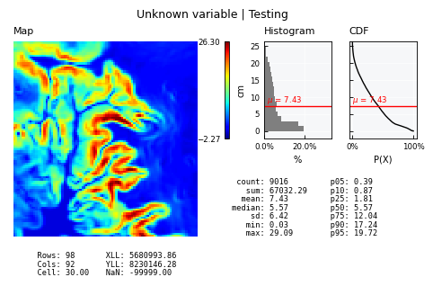
Convert and get an Univar instance:
uv = rs.get_univar()
print(type(uv))
<class 'plans.analyst.Univar'>
View as Univar:
uv.view()
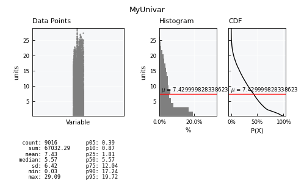
Export to other file#
Tif format is exported by default.
fo = rs.export(folder=OUTPUT_DIR, filename="slope_example")
print(fo)
print(f"File was created: {Path(fo).is_file()}")
outputs/raster/slope_example.tif
File was created: True
Copy raster structure#
Sometimes it is useful to process raster data and then save it back to the same raster grid.
Example: making a brand new data grid with the same size using numpy.random
new_data = np.random.normal(loc=100, scale=10, size=np.shape(rs.data))
print(type(new_data))
<class 'numpy.ndarray'>
Define new raster, copy structure from other and set data:
# define a new raster
rs_new = Raster()
# copy structure from rs object
rs_new.copy_structure(raster_ref=rs)
# set data
rs_new.set_data(grid=new_data)
View and/or save
rs_new.view()
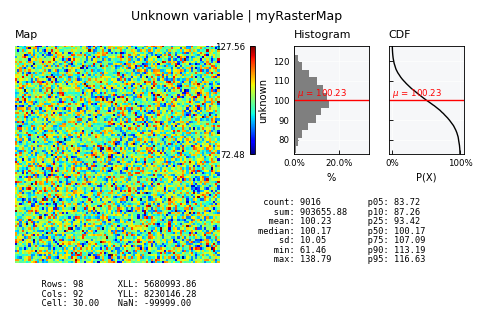
rs_new.export(folder=OUTPUT_DIR, filename="new_data")
'outputs/raster/new_data.tif'
Types of Rasters#
The Raster class is extented into several families or types.
SciRaster family#
This is a large family of rasters that are numerical values. Behaviour is nearly the same from Raster base class, but NODATA_value and dtype is enforced to the incoming data.
Members of this family are all conventional quantitative spatial variables, like terrain elevation or soil water content.
from plans.datasets import SciRaster
sciraster = SciRaster()
sciraster.load_data(file_data=raster_file)
print(f"Data type: {sciraster.dtype}")
print(f"No-data value: {sciraster.raster_metadata['NODATA_value']}")
Data type: float32
No-data value: -99999
View layout is the same from Raster:
sciraster.view()
QualiRaster family#
This is a large family of rasters that supports categorical maps, eg., land use maps. Data is always accompanied by an auxiliar Attribute Table with id, name, alias and color fields:
from plans.datasets import QualiRaster
Define new files (raster and table):
quali_raster_file = Path(pj.folder_lulc) / "observed/lulc_2020-01-01.tif"
quali_raster_table = Path(pj.folder_lulc) / "observed/lulc_attributes.csv"
qualiraster = QualiRaster()
qualiraster.load_data(
file_data=quali_raster_file,
file_table=quali_raster_table
)
print(f"Data type: {qualiraster.dtype}")
print(f"No-data value: {qualiraster.raster_metadata['NODATA_value']}")
Data type: uint8
No-data value: 255
Access the Attribute Table:
qualiraster.table.head()
| id | alias | name | name_pt | color | w_ck | w_ca | w_sk | w_soa | w_soc | w_sua | w_suc | w_sux | w_dea | |
|---|---|---|---|---|---|---|---|---|---|---|---|---|---|---|
| 0 | 3 | Fr | Forest | Floresta | #1f8d49 | 10 | 1 | 1 | 1 | 1 | 1 | 1 | 1 | 1 |
| 1 | 4 | Sv | Savanna | Savana | #7dc975 | 5 | 1 | 1 | 1 | 1 | 1 | 1 | 1 | 1 |
| 2 | 5 | Mg | Mangrove | Mangue | #04381d | 1 | 1 | 1 | 1 | 1 | 1 | 1 | 1 | 1 |
| 3 | 6 | Fl | Floodable Forest | Floresta inundável | #026975 | 10 | 1 | 1 | 1 | 1 | 1 | 1 | 1 | 1 |
| 4 | 9 | Fp | Forest Plantation | Silvicultura | #7a5900 | 1 | 1 | 1 | 1 | 1 | 1 | 1 | 1 | 1 |
Get areas table:
areas_df = qualiraster.get_areas()
areas_df
| id | name | alias | color | count | area_m2 | area_ha | area_km2 | area_f | area_% | |
|---|---|---|---|---|---|---|---|---|---|---|
| 0 | 3 | Forest | Fr | #1f8d49 | 843 | 758700.0 | 75.87 | 0.7587 | 0.093500 | 9.350044 |
| 1 | 4 | Savanna | Sv | #7dc975 | 4644 | 4179600.0 | 417.96 | 4.1796 | 0.515084 | 51.508429 |
| 2 | 5 | Mangrove | Mg | #04381d | 0 | 0.0 | 0.00 | 0.0000 | 0.000000 | 0.000000 |
| 3 | 6 | Floodable Forest | Fl | #026975 | 0 | 0.0 | 0.00 | 0.0000 | 0.000000 | 0.000000 |
| 4 | 9 | Forest Plantation | Fp | #7a5900 | 43 | 38700.0 | 3.87 | 0.0387 | 0.004769 | 0.476930 |
| 5 | 11 | Wetland | We | #519799 | 6 | 5400.0 | 0.54 | 0.0054 | 0.000665 | 0.066548 |
| 6 | 12 | Grassland | Gr | #d6bc74 | 1183 | 1064700.0 | 106.47 | 1.0647 | 0.131211 | 13.121118 |
| 7 | 13 | Not-Forest | Nf | #d89f5c | 0 | 0.0 | 0.00 | 0.0000 | 0.000000 | 0.000000 |
| 8 | 15 | Pasture | Ps | #edde8e | 1117 | 1005300.0 | 100.53 | 1.0053 | 0.123891 | 12.389086 |
| 9 | 20 | Sugar cane | Sc | #db7093 | 0 | 0.0 | 0.00 | 0.0000 | 0.000000 | 0.000000 |
| 10 | 21 | Mosaic of Uses | Mu | #ffefc3 | 505 | 454500.0 | 45.45 | 0.4545 | 0.056012 | 5.601154 |
| 11 | 23 | Beach, Dune and Sand Spot | Sd | #ffa07a | 0 | 0.0 | 0.00 | 0.0000 | 0.000000 | 0.000000 |
| 12 | 24 | Urban Area | Ur | #d4271e | 0 | 0.0 | 0.00 | 0.0000 | 0.000000 | 0.000000 |
| 13 | 25 | Non-Vegetated | Nv | #db4d4f | 137 | 123300.0 | 12.33 | 0.1233 | 0.015195 | 1.519521 |
| 14 | 29 | Rocky Outcrop | Ro | #ffaa5f | 0 | 0.0 | 0.00 | 0.0000 | 0.000000 | 0.000000 |
| 15 | 30 | Mining | Mi | #9c0027 | 0 | 0.0 | 0.00 | 0.0000 | 0.000000 | 0.000000 |
| 16 | 31 | Aquaculture | Aq | #091077 | 0 | 0.0 | 0.00 | 0.0000 | 0.000000 | 0.000000 |
| 17 | 32 | Hypersaline Tidal Flat | Sf | #fc8114 | 0 | 0.0 | 0.00 | 0.0000 | 0.000000 | 0.000000 |
| 18 | 33 | River, Lake and Ocean | W | #2532e4 | 0 | 0.0 | 0.00 | 0.0000 | 0.000000 | 0.000000 |
| 19 | 35 | Palm Oil | Po | #9065d0 | 0 | 0.0 | 0.00 | 0.0000 | 0.000000 | 0.000000 |
| 20 | 39 | Soybean | Sy | #f5b3c8 | 538 | 484200.0 | 48.42 | 0.4842 | 0.059672 | 5.967169 |
| 21 | 40 | Rice | Rc | #c71585 | 0 | 0.0 | 0.00 | 0.0000 | 0.000000 | 0.000000 |
| 22 | 41 | Temporary Crops | Tc | #f54ca9 | 0 | 0.0 | 0.00 | 0.0000 | 0.000000 | 0.000000 |
| 23 | 46 | Coffee | Cf | #d68fe2 | 0 | 0.0 | 0.00 | 0.0000 | 0.000000 | 0.000000 |
| 24 | 47 | Citrus | Ci | #9932cc | 0 | 0.0 | 0.00 | 0.0000 | 0.000000 | 0.000000 |
| 25 | 48 | Other Perennial Crops | Pc | #e6ccff | 0 | 0.0 | 0.00 | 0.0000 | 0.000000 | 0.000000 |
| 26 | 49 | Wooded Sandbank Vegetation | Ws | #02d659 | 0 | 0.0 | 0.00 | 0.0000 | 0.000000 | 0.000000 |
| 27 | 50 | Herbaceous Sandbank Vegetation | Hs | #ad5100 | 0 | 0.0 | 0.00 | 0.0000 | 0.000000 | 0.000000 |
| 28 | 62 | Cotton | Ct | #ff69b4 | 0 | 0.0 | 0.00 | 0.0000 | 0.000000 | 0.000000 |
| 29 | 101 | Dirty Road | Rd | #D2CFC0 | 0 | 0.0 | 0.00 | 0.0000 | 0.000000 | 0.000000 |
| 30 | 102 | Paved Road | Rs | #D4AD9B | 0 | 0.0 | 0.00 | 0.0000 | 0.000000 | 0.000000 |
| 31 | 103 | Railway | Rr | #B5A295 | 0 | 0.0 | 0.00 | 0.0000 | 0.000000 | 0.000000 |
| 32 | 255 | Not Observed | No | #ffffff | 0 | 0.0 | 0.00 | 0.0000 | 0.000000 | 0.000000 |
View scheme provides a horizontal bar for aereal ratios:
qualiraster.view()
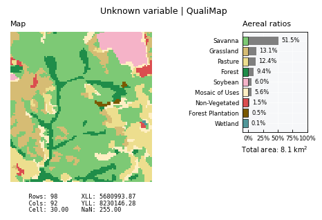
Dedicated extensions#
plans.datasets.spatial offers a series of dedicated Rasters for spatial variables. This helps to shortcut attributes and visual setup. Some examples are provided below.
Elevation raster#
from plans.datasets.spatial import Elevation
dem_file = Path(pj.folder_topo) / "dem.tif"
dem_raster = Elevation()
dem_raster.load_data(file_data=dem_file)
dem_raster.view_specs["range"] = [800, 1200]
dem_raster.view()
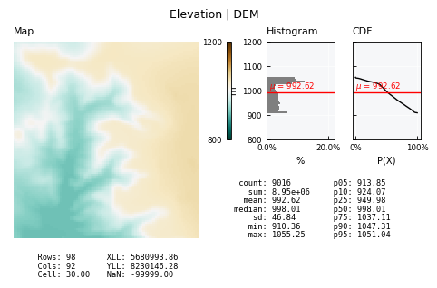
Slope raster#
from plans.datasets.spatial import Slope
slope_file = Path(pj.folder_topo) / "slope.tif"
slope_raster = Slope()
slope_raster.load_data(file_data=slope_file)
slope_raster.view()
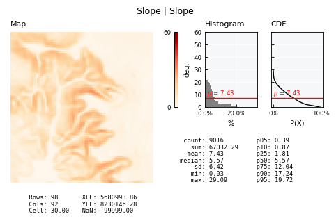
HAND raster#
from plans.datasets.spatial import HAND
hand_file = Path(pj.folder_topo) / "hand.tif"
hand_raster = HAND()
hand_raster.load_data(file_data=hand_file)
hand_raster.view()
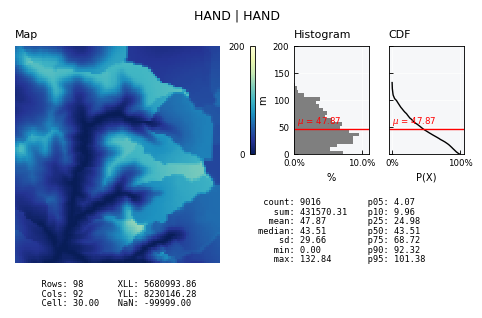
TWI raster#
from plans.datasets.spatial import TWI
twi_file = Path(pj.folder_topo) / "twi.tif"
twi_raster = TWI()
twi_raster.load_data(file_data=twi_file)
twi_raster.view()
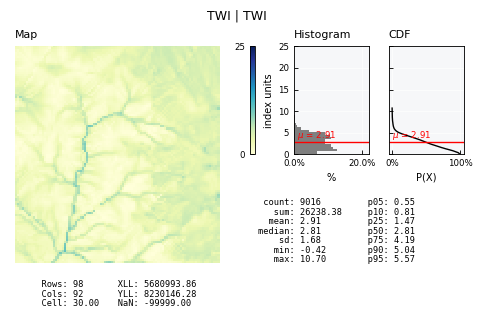
LDD raster#
LDD (Local Drain Direction) is a core map for hydrological analysis. It depends on a convention of integer numbers.
from plans.datasets.spatial import LDD
ldd_file = Path(pj.folder_topo) / "ldd.tif"
ldd_raster = LDD()
ldd_raster.load_data(file_data=ldd_file)
ldd_raster.view()
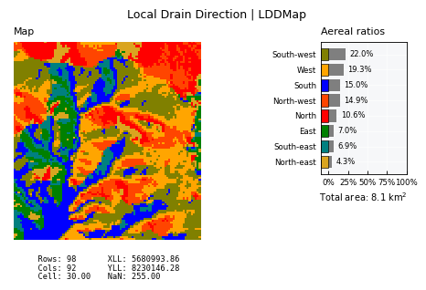
Soils raster#
Soils may reflect soils classes and lithology. Requires the Attribute Table.
from plans.datasets.spatial import Soils
# define file
soils_file = Path(pj.folder_soils) / "soils.tif"
# define table
soils_table = Path(pj.folder_soils) / "soils_attributes.csv"
# define raster
soils_raster = Soils()
soils_raster.load_data(file_data=soils_file, file_table=soils_table)
soils_raster.view()
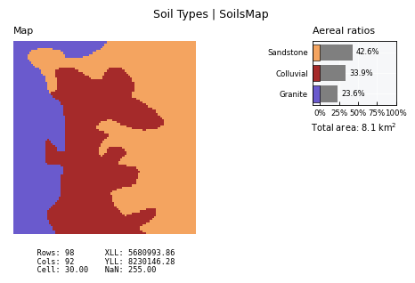
LULC raster#
LULC (Land Use and Land Cover) requires the Attribute Table and date to be provided.
from plans.datasets.spatial import LULC
# define file
lulc_file = Path(pj.folder_lulc) / "observed/lulc_2020-01-01.tif"
# define table
lulc_table = Path(pj.folder_lulc) / "observed/lulc_attributes.csv"
# define name and datetime
lulc_raster = LULC(name="LULC", datetime="2020-01-01")
lulc_raster.load_data(file_data=lulc_file, file_table=lulc_table)
lulc_raster.view_specs["title"] = "Land Use in 2020"
lulc_raster.view()
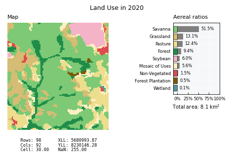
AOI Raster#
The AOI Raster (Area-Of-Interest) is a member of the QualiRaster family.
It is a boolean grid used mostly for masking operations. In this case, there is no need for an Attribute Table to be provided.
from plans.datasets import AOI
aoi = AOI()
# define basin raster for the AOI
aoi_file = Path(pj.folder_basins) / "main/basin.tif"
aoi.load_data(file_data=aoi_file)
aoi.view()
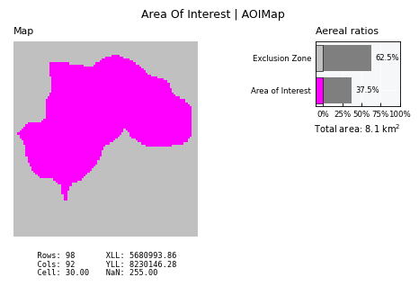
Masking Operations#
Masking is a very basic operation when working with Rasters, since in most cases we need to filter the data to a given AOI, like a catchment basin.
Say we want to know the average slope of a basin:
# use the data from the aoi map
slope_raster.apply_aoi_mask(grid_aoi=aoi.data)
slope_raster.view_specs["title"] = "Slope map for the basin"
slope_raster.view()
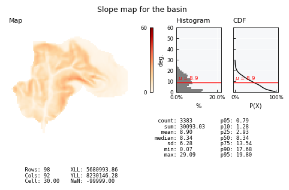
The AOI mask can be realeased:
slope_raster.release_aoi_mask()
slope_raster.view_specs["title"] = "Slope map for the full extension"
slope_raster.view()
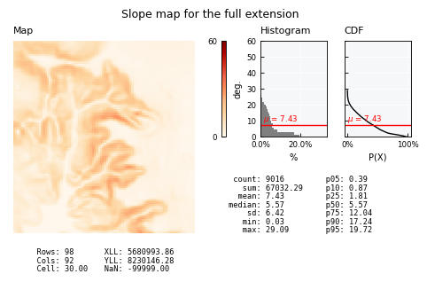
The same can be done with qualitative maps:
lulc_raster.apply_aoi_mask(grid_aoi=aoi.data)
lulc_raster.view_specs["title"] = "Land Use of the basin in 2020"
lulc_raster.view()
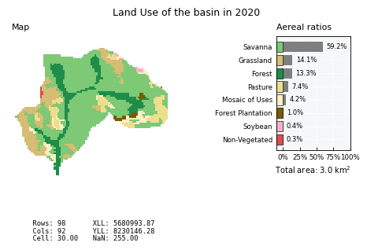